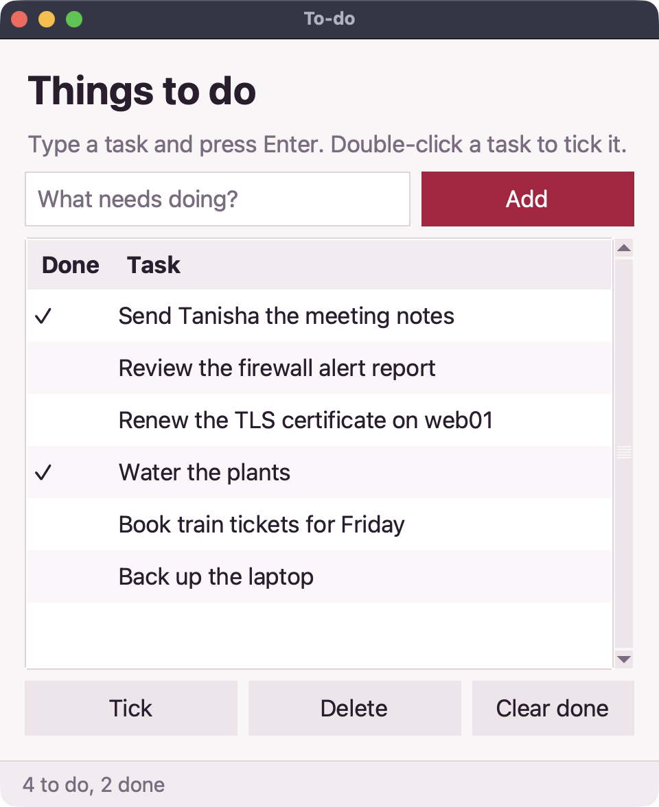

Build your first desktop app
In about twenty minutes you'll build a real to-do list app: a window with a text box, a button and a table, that remembers your tasks. It runs on Windows, macOS and Linux with the TB app.
1.Make a window
Save this as todo.tb in your TB folder and run it with tb todo.tb (on Windows you can also just double-click it). A window opens and waits until you close it.
Desktop code: save it as a .tb file and run it with the TB app.
import gui
let win = gui.window("To-do", {"width": 480, "height": 520})
win.label("Things to do", {"style": "title"})
win.run()gui.window makes the window. Everything you add to it with win.label, win.button and friends appears top to bottom. win.run() shows it; it always comes last.
2.Add a text box and a button
A row puts things side by side. The button gets a function to call when it's clicked.
Desktop code: save it as a .tb file and run it with the TB app.
import gui
let win = gui.window("To-do", {"width": 480, "height": 520})
win.label("Things to do", {"style": "title"})
let row = win.row()
let box = row.input({"placeholder": "What needs doing?"})
row.button("Add", fn() {
gui.alert(f"You typed: {box.value()}")
}, {"primary": true})
win.run()box.value() reads what's in the text box. gui.alert pops up a little message.
3.Show the tasks in a table
Keep the tasks in a list of maps, and draw them in a table. Every time the list changes, show() redraws it.
Desktop code: save it as a .tb file and run it with the TB app.
let tasks = []
let list = win.table(["Done", "Task"])
fn show() {
list.set_rows(tasks.map(fn(t) {
if t.done { return ["✓", t.text] }
return ["", t.text]
}))
}
fn add(text) {
if text.trim() == "" { return }
tasks.push({"text": text.trim(), "done": false})
box.clear()
show()
}Then point the button (and the Enter key) at add: row.button("Add", fn() { add(box.value()) }) and give the input {"on_enter": fn(text) { add(text) }}.
4.Tick tasks off and remember them
Double-clicking a row calls the table's on_open. Save the list with the json library after every change, in a file next to your program (fs.here finds that folder), and read it back when the app starts.
Here is the whole app:
Desktop code: save it as a .tb file and run it with the TB app.
import gui
import json
import fs
let FILE = fs.here("tasks.json")
let tasks = []
if fs.exists(FILE) {
tasks = json.read(FILE)
}
let win = gui.window("To-do", {"width": 480, "height": 520})
win.label("Things to do", {"style": "title"})
let row = win.row()
let box = row.input({"placeholder": "What needs doing?", "on_enter": fn(text) { add(text) }})
row.button("Add", fn() { add(box.value()) }, {"primary": true})
let list = win.table(["Done", "Task"], {"on_open": fn(r, i) { toggle(i) }})
let status = win.status("")
fn show() {
list.set_rows(tasks.map(fn(t) {
if t.done { return ["✓", t.text] }
return ["", t.text]
}))
let left = len(tasks.filter(fn(t) { return not t.done }))
status.set(f"{left} to do")
}
fn add(text) {
if text.trim() == "" { return }
tasks.push({"text": text.trim(), "done": false})
box.clear()
json.write(FILE, tasks)
show()
}
fn toggle(i) {
tasks[i].done = not tasks[i].done
json.write(FILE, tasks)
show()
}
show()
win.run()5.Run it
Run tb todo.tb. Add a few tasks, double-click one to tick it, close the window and open it again: your tasks are still there.

Where next
The full To-do app adds deleting and clearing. The gui reference lists every widget: menus, dialogs, timers, dark mode and keyboard shortcuts. For something bigger, read the Notes and Log triage apps.